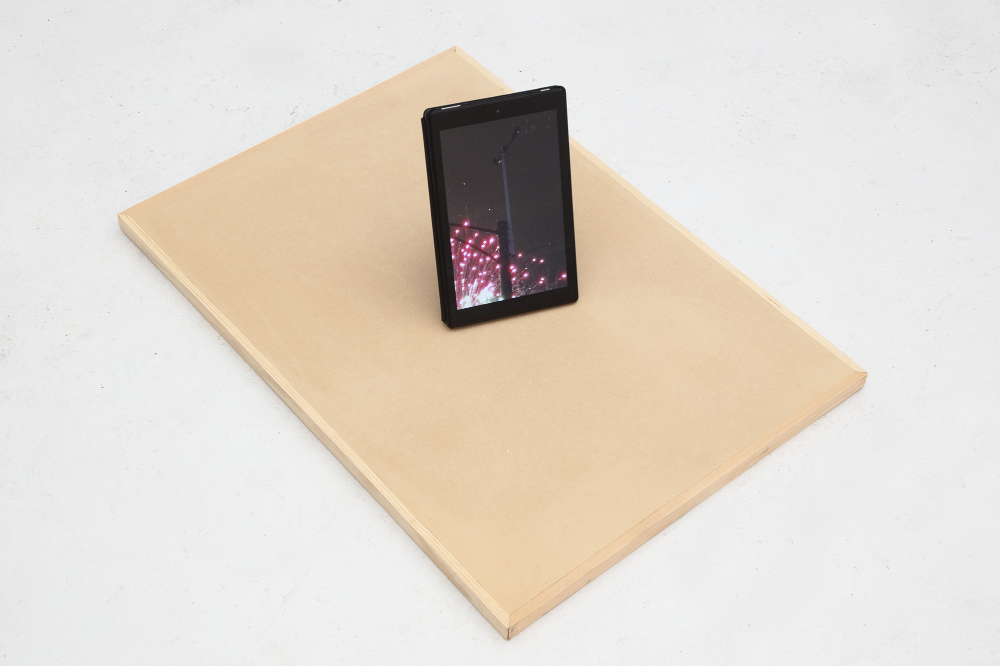
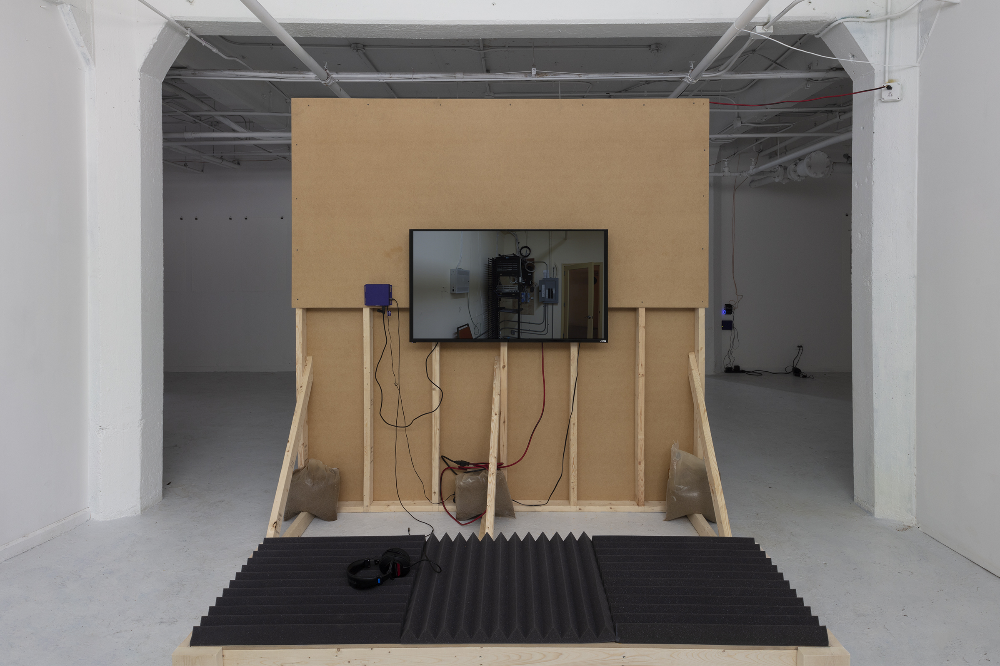
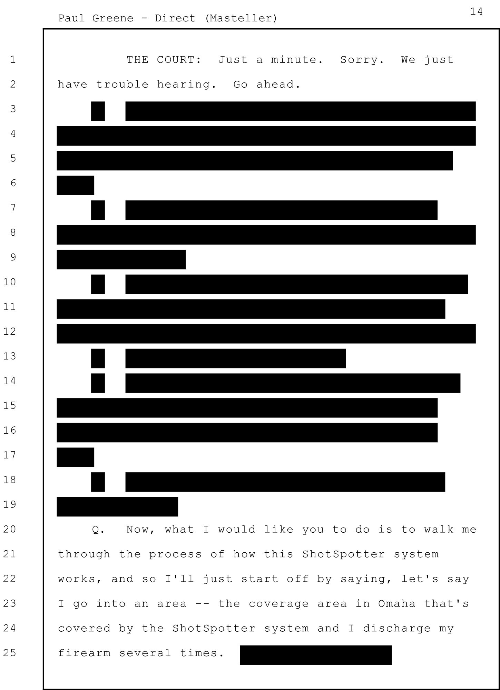
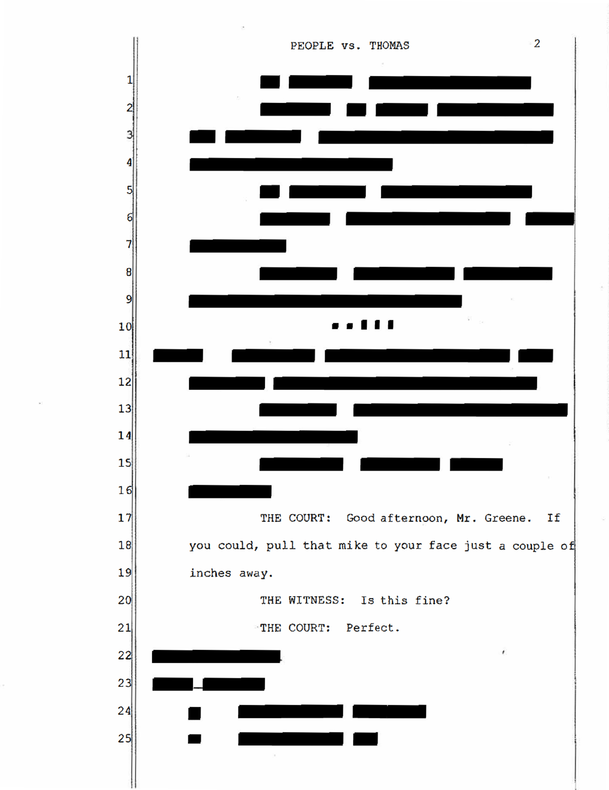
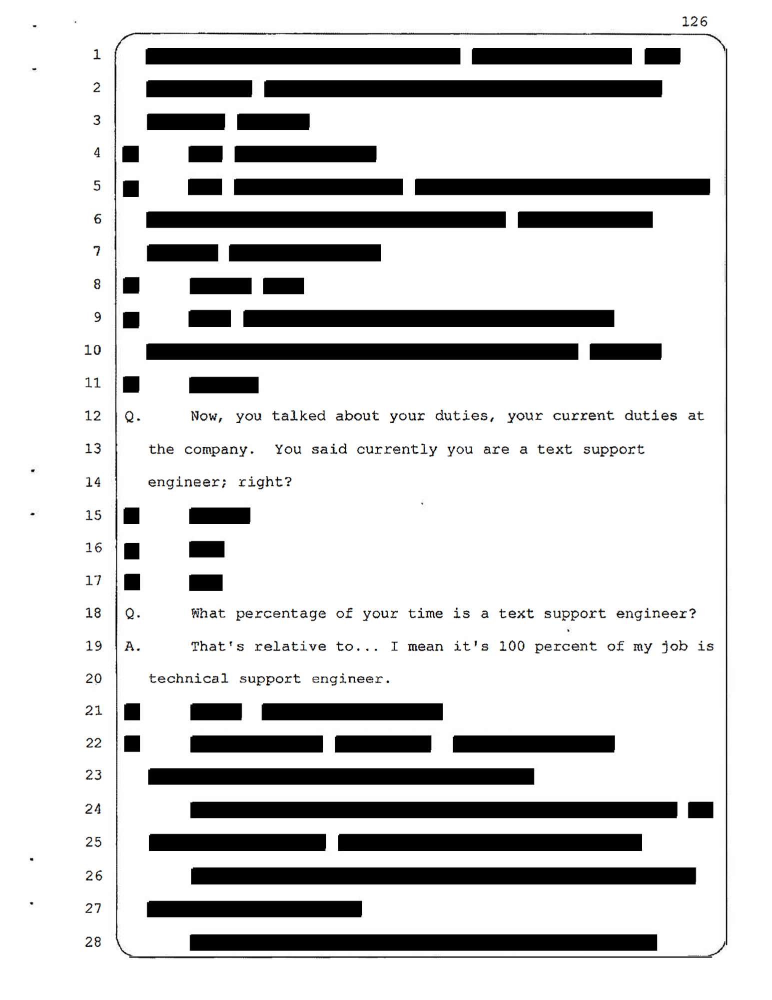
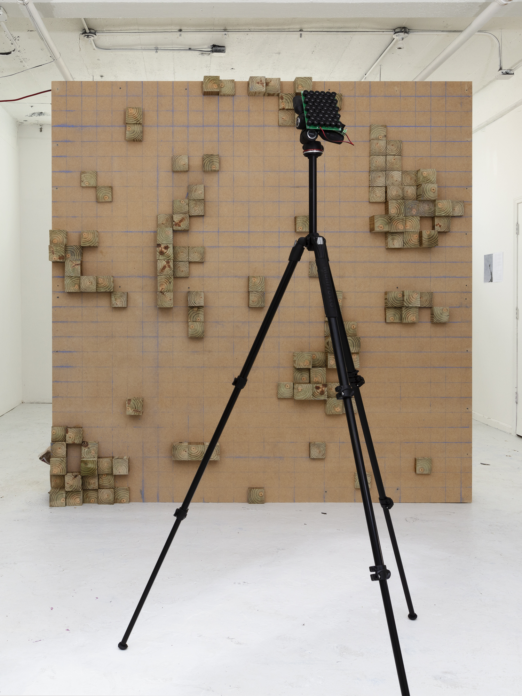
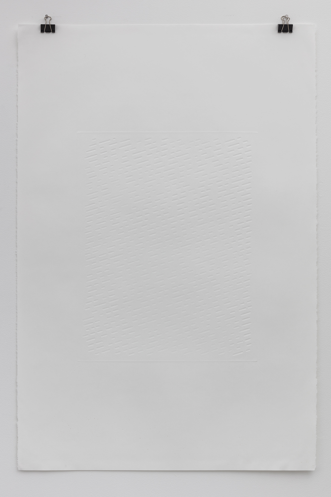
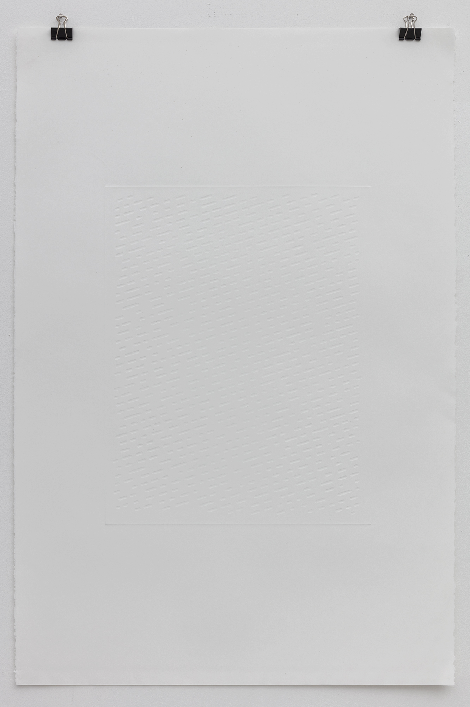
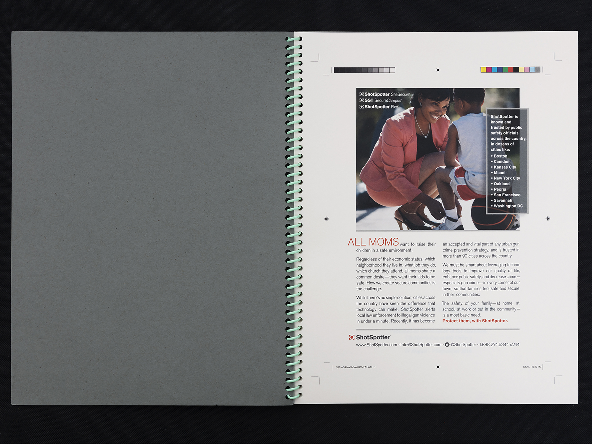
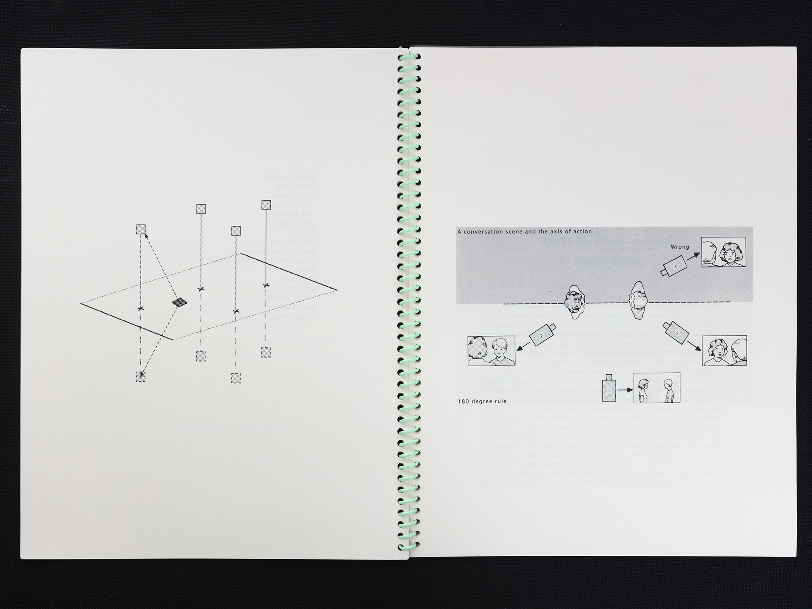

Chekhov's Gun
Chekhov's Gun, 2018
062 Gallery, Chicago, IL
Exhibition Catalogue
Press:
Studio International
Support: National Academy of Sciences, University of Chicago Arts,
Science & Culture Initiative

Using a network of microphones dispersed throughout a city, ShotSpotter
triangulates the location of a gunshot by comparing the distance from
its point of origin to the three closest microphones. ShotSpotter
installs and maintains these systems themselves, renting access to local
police departments. Besides real-time surveillance, the proprietary data
which ShotSpotter collects is fed into the company's machine learning
dataset and spun off into predictive policing programs which police
departments may also subscribe to. Given the fallibility of the system,
the data is regularly retrofit by human analysts to substantiate the
claims made by police officers in court.
Chekhov's Gun stars a group of technical support engineers
employed by ShotSpotter to visually confirm that the soundwaves selected
by ShotSpotter's machine classification are gunfire and that the time
signatures have been correctly synced for echolocation. In the film, the
three employees rehearse a dialogue based on court transcripts in which
ShotSpotter employees testify to the efficacy of the gunshot detection
system; their staging anticipates the triangulation of gunfire. The film
installation includes screenprints marking moments of mishearing in the
testimony, a bench padded with acoustic foam, and an acoustic diffuser
produced from a Chicago homicide prediction map.
A series of acoustic interventions used a purpose-built parametric
speaker and an adapted form of Morse code to communicate with
ShotSpotter's technical support engineers via their own gunshot training
dataset, isolating an individual microphone in Chicago from its intended
function in the network. The waveforms of these interventions were
encoded for compact disc—the technological standard for courtroom
evidence—and reproduced as embossings.












